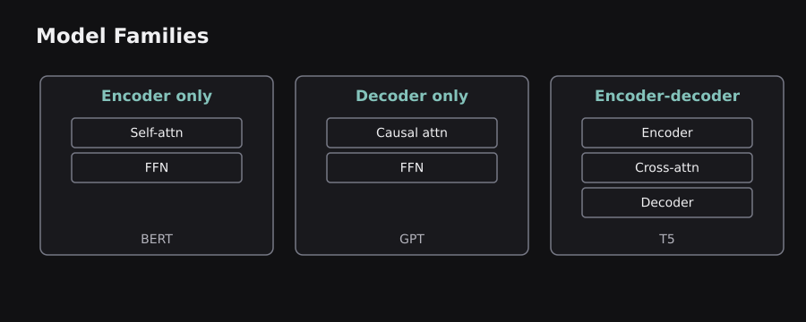
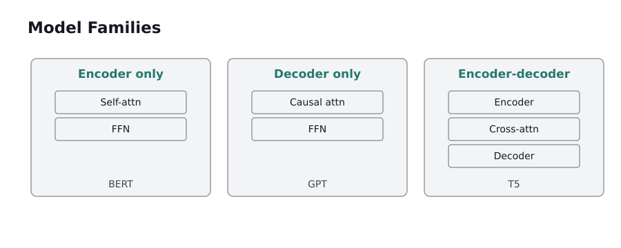

ENGINEERING BLOG / CHAPTER 08 OF 10
BERT, GPT, T5, and the Major Transformer Families
Download chapter PDF ↓A Transformer is an architecture, not a single model or task. This chapter explains how changing the attention direction, training objective, and output head produces different capabilities. We begin with BERT and finish with the practical distinction between representations and generation.
8.0 — Three model families, three useful defaults
There are three broad patterns. Encoder-only models process a completed input bidirectionally and are commonly used for classification, tagging, extractive question answering, and learned representations. Decoder-only models predict subsequent tokens autoregressively and are common for open-ended text generation. Encoder–decoder models read a source through an encoder and generate a target through a decoder, suiting translation and transformation tasks.
Well-known examples are BERT for encoder-only, GPT for decoder-only, and T5 for encoder–decoder. These are representative families rather than strict limits: encoder–decoder systems can classify, decoder-only models can produce useful embeddings when appropriately trained, and encoders can serve as components in larger generative systems.
The pretraining objective is as important as the stack arrangement. A model trained to reconstruct masked words learns to exploit two-sided context. A model trained to predict the next token learns to continue prefixes. A model trained to transform text-to-text examples learns task-conditioned generation.
Recommendation for architecture selection: start from the desired output. A category or an embedding does not inherently need autoregressive generation. A free-form written answer usually does. Complexity is not a quality metric.
8.1 — BERT architecture, special tokens, and input embeddings
BERT means Bidirectional Encoder Representations from Transformers. It uses the Transformer encoder stack, giving each token access to tokens on both sides. This creates context-sensitive hidden vectors useful for understanding entire passages. BERT's original input representation adds three learned components: token embedding + segment embedding + position embedding.
A typical input begins with [CLS], a special token whose representation can feed a classification head. [SEP] marks boundaries between sentences or segments. A sentence-pair input can look like [CLS] sentence A [SEP] sentence B [SEP], with segment IDs identifying the two parts. Padding allows batching and is excluded from attention through masks.
Original BERT Base has 12 encoder layers, hidden size 768, and 12 attention heads; original BERT Large has 24 layers, hidden size 1024, and 16 heads. These are historical architecture definitions, not requirements for every BERT-like descendant.
Why bidirectionality matters: the meaning of “pitch” in “The pitch was wet after rain” depends on surrounding words. BERT can use the left and right context simultaneously when computing that token's representation. Primary source: BERT paper.
 
8.2 — Masked language modeling and next sentence prediction
BERT's original pretraining includes Masked Language Modeling (MLM). It selects roughly 15% of input token positions for prediction. Of those selected positions, 80% become [MASK], 10% receive a random replacement token, and 10% remain unchanged. The training objective asks the model to recover the original selected tokens using both left and right context.
For “The child [MASK] the ball”, the model might assign a high probability to “caught” after learning from surrounding language. The target token is not visible in that masked position, but other words on either side are. The selected positions supply a self-supervised learning signal without requiring a human to annotate millions of sentences.
The original paper also uses Next Sentence Prediction (NSP): determine whether sentence B follows sentence A in the source material. Later research, especially RoBERTa, showed that this particular objective is not essential for strong BERT-style representations. The point is to understand an architectural design historically rather than assume all later models kept every part.
Crucial distinction: MLM uses bidirectional context and predicts selected missing tokens. Causal language modeling predicts the next token from a prefix. Their masking rules and generation behavior are not interchangeable.
8.3 — Fine-tuning BERT for common downstream tasks
Fine-tuning updates pretrained model weights using task-specific examples, often with an added output head. For sentence classification, a head consumes the final [CLS] representation and predicts labels. For token classification, a head examines each token's contextual representation to identify named entities or grammatical categories. For extractive question answering, two heads predict the start and end positions of the answer span in a supplied passage.
Suppose a product team needs to categorize support tickets. It can begin with a pretrained encoder, encode each ticket, add a small linear classification layer, and train on labeled ticket categories. This reuses the model's general language representations rather than starting from random weights.
A minimal inference example depends on a previously downloaded checkpoint; the code illustrates the interface rather than demonstrating a trained result:
from transformers import pipeline
classifier = pipeline("text-classification", model="distilbert/distilbert-base-uncased-finetuned-sst-2-english")
result = classifier("The documentation is clear.")
print(result[0]["label"])
# Output depends on checkpoint and library environment
Important caveat: outputs and label names depend on the chosen checkpoint. Evaluate task-specific accuracy, class balance, calibration, privacy, and inference costs rather than inferring production quality from one example.
8.4 — RoBERTa, ALBERT, DistilBERT, ELECTRA, and DeBERTa
BERT sparked many variations, each addressing different limits. RoBERTa revises the pretraining recipe with changes such as more data, dynamic masking, and removal of NSP. ALBERT reduces parameter cost through factorized embeddings and cross-layer parameter sharing, while also introducing a sentence-order objective. DistilBERT uses knowledge distillation: a smaller student learns from a larger teacher, offering efficiency trade-offs.
ELECTRA uses replaced-token detection. Rather than predicting only masked token identities, a discriminator learns to identify which input positions were replaced by a generator. This changes how training supervision is distributed across tokens. DeBERTa separates representations of token content and position more explicitly, with attention designs aimed at better handling their interactions.
These are not interchangeable brand names. Each changes a training objective, parameter-sharing rule, architectural detail, or deployment trade-off. The best choice depends on language coverage, latency, memory, task, checkpoint quality, and license.
Working rule: for classification or NER, compare a strong small encoder baseline against larger options on your own held-out data. Smaller models may deliver a better accuracy–latency balance than using a giant generative model to output a label.
8.5 — Decoder-only models: GPT and causal language modeling
A decoder-only Transformer stacks causal self-attention blocks and predicts the next token from a prefix. During training, a sequence provides many input–target pairs simultaneously: the model sees earlier positions while the causal mask hides future positions. During inference, it generates tokens iteratively.
This architecture underlies GPT-style models and many modern open-weight language models. Unlike the original encoder–decoder architecture, it normally does not use a separate encoder memory or an encoder–decoder attention block. User instructions, documents, and dialogue history often appear together as tokens in one prompt sequence.
The model's learned parameters store statistical patterns from training; the context window is the current input and generated-token history. These are different kinds of information. A document placed in the prompt is not guaranteed to be stored permanently in the model weights, and the model's output is not guaranteed to quote that document faithfully.
Autoregressive generation makes conversational responses and code completion natural use cases, but latency grows as more tokens are generated. Later chapters cover KV caching, efficient attention, and decoding infrastructure built to reduce that cost.
8.6 — Encoder–decoder models: T5, BART, and transformations
Text-to-Text Transfer Transformer (T5) frames many NLP tasks as input-text to output-text transformations. Rather than building unrelated output formats for translation, summarization, and question answering, the training formulation converts tasks into text sequences. A prefix such as “translate English to German:” can identify the desired operation.
BART combines a bidirectional encoder with an autoregressive decoder and learns to reconstruct clean text from corrupted input. This makes it useful for generative transformation tasks where the output must remain conditioned on an input passage. Such denoising objectives differ from BERT's selected-token MLM even though both learn from damaged text.
Consider summarization. The encoder reads a long news paragraph and produces contextual states. The decoder generates a shorter summary, using causal self-attention on the summary prefix and cross-attention to relevant source states. This is easier to visualize than treating source and output as one undifferentiated stream.
Limitations: generated summaries can omit qualifiers or fabricate details even when source attention is available. Automatic overlap metrics may reward matching words without catching every factual error. Grounding and evaluation remain essential. Reference: T5 paper.
8.7 — Sentence embeddings and semantic retrieval
A token encoder does not automatically produce an optimal sentence embedding by averaging token vectors or reading [CLS]. Sentence-level retrieval requires a representation trained so relevant texts have high similarity and unrelated texts have lower similarity. Contrastive learning is one common approach: train on related and unrelated pairs so the embedding geometry reflects relevance.
A search system may embed each document chunk once, then embed a user's query and find nearby chunk vectors. Approximate nearest neighbor indexes accelerate similarity search when the document collection becomes large. A search engine must also handle chunk boundaries, duplicate text, metadata filters, and permission checks.
A crucial difference is semantic similarity versus factual agreement. Two sentences can be topically similar while contradicting each other: “The service is enabled” and “The service is disabled.” A cosine score alone does not reliably determine truth, entailment, or whether a cited document supports an answer.
For practical retrieval, compare lexical, dense, and hybrid ranking against labeled query–document pairs. Measure recall at k and evidence quality, not just whether a demonstration looks convincing.
8.8 — Transfer learning, fine-tuning, prompting, and adapters
A pretrained model can be adapted in several ways. Full fine-tuning changes most or all weights. Feature extraction freezes a model and trains only a downstream head. Prompting places task instructions and examples inside the model context without modifying its weights. Adapters and Low-Rank Adaptation (LoRA) train relatively small added parameter sets while keeping many pretrained weights frozen.
The simplest correct choice depends on constraints. When a reliable classification dataset exists, fine-tuning a compact encoder may be effective. When requirements change frequently, prompting an existing instruction-following model may be faster to iterate. When a model needs a domain-specific style or structured output across many calls, parameter-efficient fine-tuning may justify its setup and maintenance.
These methods solve different problems. Adding a PDF to a prompt provides context, not permanent weight updates. Retrieval provides external evidence, not inherent truth verification. Fine-tuning changes model behavior but is a poor replacement for continuously changing facts.
Risk: evaluate catastrophic forgetting, privacy, train–test contamination, and whether the deployment license permits the intended use. We will study LoRA mathematically in the advanced chapter.
8.9 — Evaluation by task, not by model popularity
A model should be evaluated according to the output contract. Classification uses precision, recall, F1, confusion matrices, and calibration. Named-entity recognition typically evaluates correctly matched spans and labels. Retrieval uses recall@k, MRR, and ranking measures. Extractive QA may use exact-match and token-overlap scores. Generated text requires task-specific human or model-assisted evaluation of factuality, usefulness, and failures.
Data design can dominate model choice. Duplicated documents across train and test splits can inflate scores. A summarizer may look strong on short English articles yet fail on long technical tables. A retrieval model may handle common paraphrases but miss identifiers such as ERR_042 or contract clause numbers.
Establish three baselines: a simple rule or lexical system, a compact pretrained model, and any proposed larger model. Record cost, latency, memory, evaluation distribution, and error categories. Improvement means a measured gain on criteria the application actually values.
Chapter synthesis: BERT-style encoders excel at bidirectional representations, GPT-style decoders at causal generation, and T5/BART-style encoder–decoders at conditional transformations. Their training objectives explain much of the difference. Now we examine the engineering techniques that make large and long-context Transformers practical.
Sources and further reading
These sources supplement the original explanations. The uploaded PDFs and cheatsheets informed the topic coverage; their illustrations and prose are not republished.